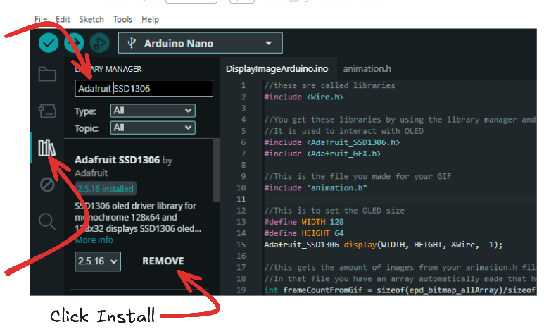
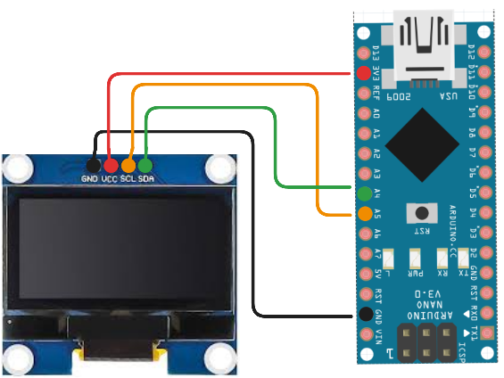
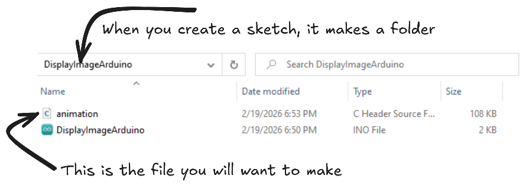

Open the Arduino IDE and go to the library manager. Download the Adafruit SSD1306 library. (A library is just code someone else made for you to use in your code.)

Connect your OLED to your ESP32 or Arduino.
You will have to review your specific ESP32 or Arduino,
but what you're looking for is the SCL (serial clock) and SDA (serial data) pins.

You might ask yourself, "What are SDL and SDA pins for?" They help you use the Inter-Integrated Circuit (I2C) protocol built into your board, which in turn lets you use 1 or 2 wires to get the job of multiple data wires done!
Now that we are wired up, let's go ahead and get our project started. We are going to make 2 files, one for our code and another for the animation. We don't really need to, but it keeps things cleaner in the long run.
We are going to make a new sketch in Arduino IDE and then save it with a name you will remember. Next you will want to make a file called "animation.h" (using notepad or VS code) in your arduino project folder that you just made.

It is a library of all the images related to your animation/GIF.
We will add our GIF generated code to this file so we can reference it easily.
Lets pick a short GIF and generate some code to add to our code library!
A good test gif is: https://tenor.com/view/cubefunk-cube-spin-animation-drawing-gif-22979313
Right click the GIF, save as a name you remember.
Now we are going to use 2 websites to help us out. A GIF splitter, and an image to code generator.
The first one you want to use is: https://ezgif.com/split Upload the GIF you saved, click split frames, and download frames as zip. Extract the zip
Upload all the frames to: https://javl.github.io/image2cpp/ There are a few settings you will want to play with here, especially image size, scaling, brightness, and center image. Double check the preview screen to make sure you have your settings correct.

Now back to our main code for the ESP32 or Arduino. I have made a simple script that uses the animation.h file we made and goes through all the images in that file smoothly. Feel free to play with the delay to make it faster or slower. I will add comments to the code to explain more of it. Paste this code into your arduino sketch(The INO file, not the .h one)
//these are called libraries
#include <Wire.h>
//You get these libraries by using the library manager and hitting install
//It is used to interact with OLED
#include <Adafruit_SSD1306.h>
#include <Adafruit_GFX.h>
//This is the file you made for your GIF
#include "animation.h"
//This is to set the OLED size
#define WIDTH 128
#define HEIGHT 64
Adafruit_SSD1306 display(WIDTH, HEIGHT, &Wire, -1);
//this gets the amount of images from your animation.h file.
//In that file you have an array automatically made that holds all your images called : epd_bitmap_allArray
int frameCountFromGif = sizeof(epd_bitmap_allArray)/sizeof(epd_bitmap_allArray[0]);
void setup() {
display.begin(SSD1306_SWITCHCAPVCC, 0x3C);
display.clearDisplay();
}
//inside this loop, we have a for loop that says
//"for each image in the gif, display it, wait 30 milliseconds, clear the display, then move on to the next image"
void loop() {
for (int i = 0; i < frameCountFromGif; i++) {
display.clearDisplay();
display.drawBitmap(0, 0, epd_bitmap_allArray[i], 128, 64, SSD1306_WHITE);
display.display();
delay(30);
}
}
Now plug in your Arduino/ESP32, upload the code, and watch the animation play! Try using different GIFs and increase or decrease the speed. Note the gif will have to be on the shorter side or it might take up too much space on your Arduino; when you verify or compile it will throw an error saying too large. If you REALLY cannot live without the GIF you want, you can always cut half the images out of your split GIF without it looking too choppy.